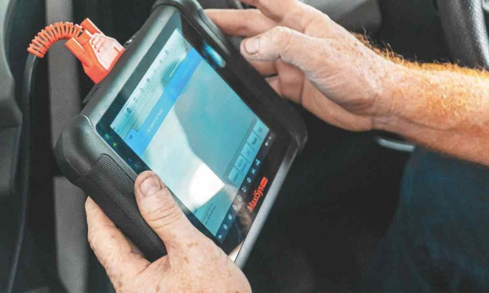
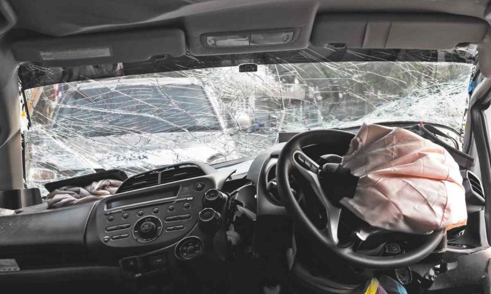

Has the increased frequency of vehicle recalls resulted in owners becoming complacent and ignoring them – with potentially fatal results? We detail what you need to know about vehicle recalls…
Image: Supplied
It seems that barely a week goes by before news of another safety-related vehicle recall appears in the international headlines. In the context of vehicle recalls, the definition of "safety-related" can be quite broad. It includes problems or failures that pose an immediate threat of severe injury or fatality, through to those which might only lead to a breakdown but are deemed safety-critical as they could result in the vehicle stopping in a dangerous position or location. Fortunately, the latter are in the majority, but conversely this has contributed to a situation where the sheer number of recalls combined with this perceived over-cautious approach has led to many motorists not taking such matters as seriously as they should.
The first question many of us ask is why there are so many recalls and whether this indicates a decline in vehicle quality. Rather than a drop in quality, the reason for the increase is due to a combination of increased vehicle complexity and more stringent consumer protection legislation. The growth in vehicle feature levels has significantly increased the number of parts and systems, and hence the potential defect or failure points. Driver assistance safety features like ADAS require additional wiring, sensors and software. These are provided by an increasing pool of suppliers utilising different software which needs to be consolidated by the vehicle manufacturer, again increasing the potential for faults and recalls. To confirm this, while software issues accounted for only 15% of all recalls in the US in 2023, this increased to 41% of recalls in 2024.
Governments worldwide have introduced stricter consumer protection laws which have enhanced regulatory oversight and generally require manufacturers to report potential defects and safety hazards to regulatory bodies. Agencies are also empowered to demand recalls and, if these are not initiated by manufacturers, to impose fines and other penalties. Manufacturers also have their own motivation to manage their reputational risk and limit potential liability by proactively implementing recalls. These stricter legal requirements and increased caution by the vehicle manufacturers have resulted in a short-term increase in the number of recalls, but we can expect these to become less frequent in the future through improvements in product design, testing and quality controls.

Image: Pexels
The recall process
In South Africa, where Ford Motor Company of Southern Africa issued vehicle safety recalls in July 2025, the safety recall process is controlled and managed by National Consumer Commission (NCC) Recall Guidelines in terms of procedures defined in the Consumer Protection Act (CPA). Should the NCC become aware of and determine that a vehicle poses a potential safety risk, it is empowered to instruct the manufacturer to implement a compulsory recall.
However, most recalls are initiated by the vehicle manufacturer which, in most cases, would be alerted to a potential problem by their overseas parent which has the benefit of receiving feedback from of their international markets. In addition, most local manufacturers may be alerted to an issue through their own quality control checks, checks on supplier quality, and warranty data.
Once a problem is identified, the manufacturer assesses the level of risk and potential harm, while identifying and determining the number of units potentially affected. If the defective parts are still in production, production is halted until a modified part can be introduced. At this point the manufacturer consults with the NCC, outlining the problem and submitting a detailed recall plan which will include a timeline through to expected completion as well as details of the communication plan to customers.
In many cases this will start with a public announcement followed by direct communication from the manufacturer to the affected customers, informing them what steps they should follow. Typically, this will require the customer to contact a dealer to arrange an urgent appointment for their vehicle to be repaired. During this recall process, the NCC and manufacturer will liaise to monitor the progress of the recall against the planned timeline.
Image: Supplied
If the recall affects vehicles with active service or maintenance plans, the process generally proceeds as planned, with manufacturers often using their call centres to contact affected customers directly. Most of these customers will still be servicing their vehicle at the franchised dealer, which will generally have their current contact details and be able to arrange the appointment without difficulty. It's when the vehicle is out of a service or maintenance plan, and the owner has opted to move to non-franchised servicing, that difficulties arise. Manufacturers try registered mail to the last known address, but even if this is still valid, the mail is often not collected in the belief that it might be a traffic fine. Some vehicle owners will have changed their contact details, while other vehicles will have been sold; in neither case is the dealer or manufacturer informed.
At this point, the manufacturer has very little option but to resort to social or other media to appeal to owners of potentially affected vehicles to contact the manufacturer or dealer to have their vehicle's VIN number checked against the affected vehicle list. Unfortunately, despite these efforts, some owners still ignore these appeals, presumably with an attitude along the lines of, "they're just being overly cautious, it won't happen to me."
Takata airbag recall
Undoubtedly the most serious and widespread recall in recent years was that involving Takata airbags. The origins of the recall date back to a decision by Takata in the late 1990s to use ammonium nitrate as the propellant in airbag inflators. The benefits were reduced cost and the fact that a reduced quantity of propellant was required, allowing more compact packaging – particularly useful for steering wheel-mounted driver airbags. Unfortunately, initial testing was inadequate and failed to detect that after an extended period of being subjected to cycles of heat and humidity, the solid propellant became unstable, developing phase separation, crystallisation, and changes in its microstructure.
Normally, after being triggered, the propellant combusts at a controlled burn rate, fully inflating the airbag in approximately 30 milliseconds before the occupant contacts it. In the case of degraded propellant, combustion occurs more rapidly and violently, with the rapid spike in peak combustion pressure exceeding the design limit of the metal inflator housing, causing it to rupture and send metal fragments towards the vehicle occupants.
The first failure was reported in 2004, but subsequent failures were attributed to specific production quality issues and only resulted in limited vehicle batch recalls. It wasn't until 2014 that the degrading effect of heat and moisture level cycling was officially acknowledged, and the recalls were expanded, focusing initially on high temperature and humidity areas before expanding worldwide. The recall has become the largest in automotive history, covering more than 100 million vehicles internationally from more than 20 of the world's major manufacturers, with approximately 35 deaths and hundreds of injuries being reported. It is still ongoing, with the inclusion of another 2.5 million vehicles in France added as recently as June following another death.

Image: Supplied
By 2024 it was estimated that approximately 88% of affected vehicles had been repaired, using inflators from other suppliers which utilise a different propellant. This leaves millions of vehicle users still at risk that even a relatively minor accident, which might just only meet the threshold to trigger the airbags, could become fatal or at least result in significant injuries. In fact, the nature of these injuries is such that an A & E doctor on examining a victim, initially suspected a frenzied knife attack rather than an airbag deployment.
The situation in South African is no different to the international one, with vehicles from numerous manufacturers affected, and despite their best efforts, many owners proving virtually impossible to contact or not taking the recall seriously enough to take their vehicles in for repair. Volkswagen is one of the affected manufacturers and recently shared their efforts to contact customers as well as their concern with the apathy of some customers contacted.
Their process to alert affected customers and advise them of repairs has included media announcements, registered letters to affected consumers, a call centre to handle recall-related queries, prominently positioning a "VIN checker" on their website to allow owners to easily check whether they are affected, and alerting dealers to check every potentially affected vehicle coming in for service or repair.
In addition, where they do not have current owner details, they have worked with the RTMC to obtain these details and make contact via WhatsApp and other social media. They have also arranged that warnings are flagged at the annual licence renewal of affected vehicles. Unfortunately, many licence renewals are done by agents, some of which use their own instead of customer contact details, while some may not forward any warnings flagged when processing the renewal.
Other affected manufacturers in South Africa have followed similar processes and there is little they can do to reach out to affected owners and persuade them to have their vehicles rectified. We have a hot climate with large areas also experiencing high humidity – the conditions which exacerbate the problem. While there are currently no known local reports of injuries or fatalities due to defective Takata airbags, the risk remains very real. Surely the five minutes it would take to check the website of your vehicle's manufacturer is worth ensuring that a faulty airbag will not explode and send shards of sharp metal into your vehicle's passenger space?
Original Article Source:
What You Need to Know About Vehicle Recalls
News • Posted July 25, 2025
By: Graham Eagle
https://www.carmag.co.za/news/what-you-need-to-know-about-vehicle-recalls/